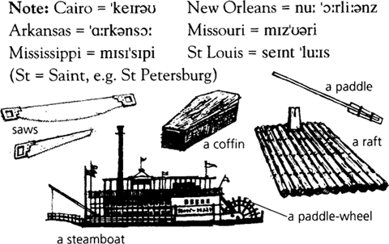

Thời gian: 1846. Địa điểm: Sông Mississippi, St Petersburg và những thị trấn khác gần con sông. St Petersburg là tên gọi mà nhà văn dành cho thị trấn của mình, Hannibal.
Vào thời điểm xảy ra câu chuyện này, ở miền Nam nước Mỹ có rất nhiều nô lệ. Vào thế kỷ thứ mười tám, các chủ đất ở Châu Âu và Châu Mỹ đã bắt những người dân Phi. Những người châu Phi da đen này trở thành nô lệ của các chủ đất – họ phải làm việc cho những người này. Các chủ đất không trả tiền cho các nô lệ – họ sở hữu họ. Các nô lệ có cuộc sống vô cùng khốn khổ. Một số thương nhân đã mua và bán những nô lệ da đen này – họ là những kẻ buôn nô lệ. Đôi khi, nô lệ bỏ trốn khỏi các chủ của mình. Họ được gọi là nô lệ bỏ trốn. Người da trắng thường bắt được những kẻ bỏ trốn và được thưởng tiền.
Đầu thế kỷ XIX, các chính phủ ở Châu Âu đã chấm dứt nạn buôn nô lệ. Người dân Châu Âu không sở hữu nô lệ sau đó. Và Chính phủ Hoa Kỳ cũng muốn chấm dứt nạn buôn nô lệ. Sớm thôi, không còn nô lệ nào ở các tiểu bang ở vùng Đông Bắc của đất nước. Nhưng hầu hết các chủ đất ở các tiểu bang phía Tây Nam của Sông Mississippi và ở miền Nam đất nước muốn giữ lại các nô lệ của mình. Một số chủ đất tốt bụng ở các tiểu bang này đã trả tự do cho các nô lệ của mình. Sau đó, những người này không còn là nô lệ nữa.
Vào thời điểm câu chuyện này diễn ra (1846), một số tiểu bang ở Hoa Kỳ là các tiểu bang tự do. Đây là các tiểu bang ở vùng Đông Bắc. Không có nô lệ nào ở những tiểu bang này. Việc sở hữu nô lệ là bất hợp pháp ở các tiểu bang này. Và ở những tiểu bang này, việc bắt nô lệ từ các tiểu bang khác là bất hợp pháp. Hầu hết các tiểu bang phía Nam là các tiểu bang có chế độ nô lệ – người dân ở đó sở hữu nhiều nô lệ. Trong câu chuyện này, Arkansas và Missouri là những tiểu bang có chế độ nô lệ. Và ở một số tiểu bang khác (ví dụ: Illinois), người da trắng không sở hữu nô lệ nhưng họ đã bắt giữ những nô lệ bỏ trốn từ các tiểu bang có chế độ nô lệ. Việc làm này là hợp pháp. Những người da trắng đã đưa những kẻ bỏ trốn về với chủ của chúng và được thưởng tiền.
